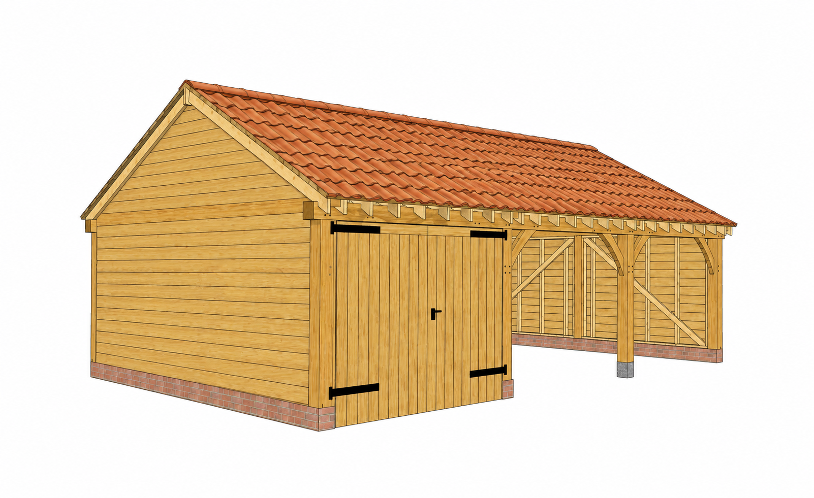
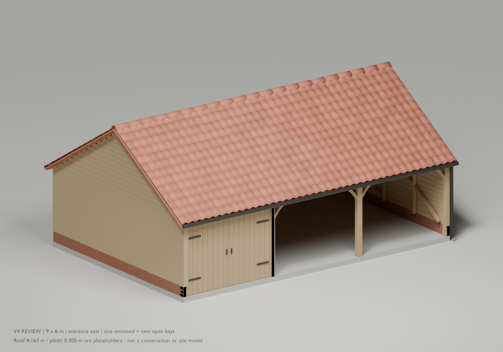
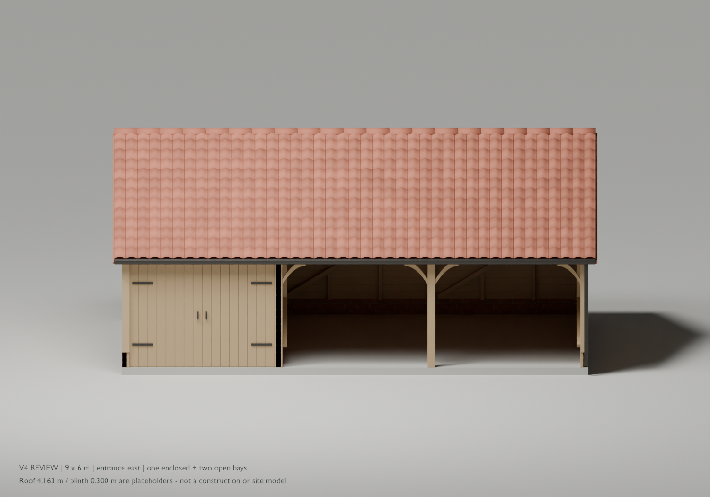
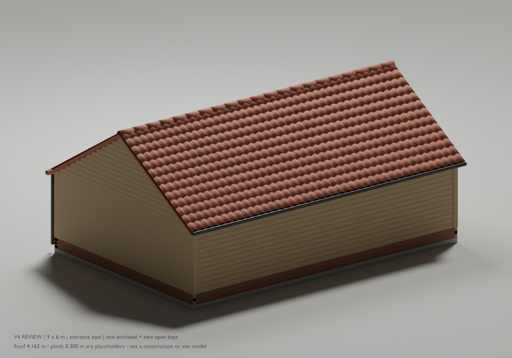
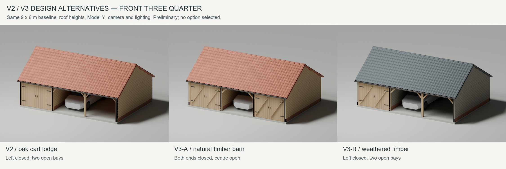

Dad’s garage review pack
The current V4 brief and model, with the earlier drawings and design options retained for reference.
Open the interactive 3D garageRead what’s agreed and still needed
Use this pack with Cursor Agent
Open this extracted folder in Cursor, start a local Agent chat, then copy and send the prompt below. The agent has instructions to find or install free Blender, open the V4 model and explain the project.
Start this garage review pack for me. Read AGENTS.md and LLM-PROJECT-CONTEXT.md first, then follow SETUP-BLENDER.md. Check whether a compatible Blender is already installed; if not, install the free official Blender version suitable for this computer. Open output/V4/model/garage-V4-review.blend in Blender and open START-HERE.html in my browser. Do not rebuild or overwrite the supplied files. Verify what opened, explain the project and what I am looking at in plain English, and tell me which dimensions or site details are still provisional. Then help me inspect it and answer my questions.
Opening the folder alone does not run setup. Allow the normal tool or operating-system prompts when needed. The pack includes project instructions and an always-applied Cursor rule.
Full Cursor guide and example questions · Project context for the agent · Blender setup instructions
1. Inspect the new model
Drag to rotate; scroll or pinch to zoom. Hide the roof, doors or weatherboarding to see inside.
No Blender installation is needed for the browser viewer.
2. Review the paperwork
3. Return the site information
The marked map, garage/driveway sketches, four-side photos, measured offsets and ground levels unlock the next drawing stage.
Current V4 appearance and model
Current design direction 9 × 6 m; entrance east; left enclosed bay with full partition; two open bays; equal openings; natural timber and red clay pantiles.








Earlier technical drawings
P02 · preliminary historical drawings These contain earlier assumptions and have not been reissued to reflect V4. Read the current brief first. They are not a verified submission or construction set.
Existing building drawingsEarlier proposed drawingsEarlier size comparison

Previous design alternatives
V3 · not selected Option A has two enclosed end bays; option B explores weathered timber and a charcoal roof. The natural-timber/red-pantile V4 direction above is the selected appearance.

Editable files and project record
3D model files
The Blender model is editable in Blender 4.5 or later. The file includes its resources. The GLB provides an additional portable 3D format.
Current records
Drawing register · Editing/export guide
Original source files, editable drawings, scripts and older models are included in their project folders.
How to use and share this pack
- Download the whole ZIP, then extract/unzip it into one folder.
- Open START-HERE.html in a desktop browser. Keep the accompanying folders beside it.
- To pass it on, send the ZIP as a file attachment or put it in your preferred file-sharing service and send its download link. A laptop or desktop is the easiest way to inspect the 3D viewer.